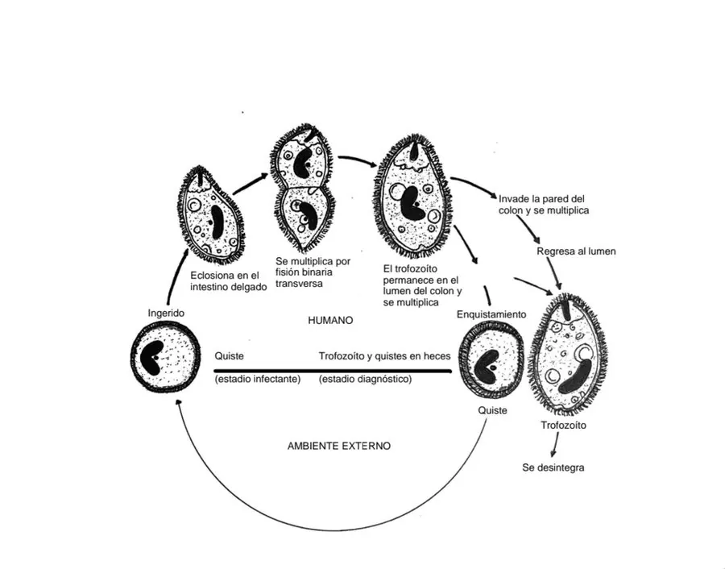

其他无脊椎动物 · 动物界
结肠小袋纤毛虫 Balantidium coli

寄生于人和猪大肠的最大寄生性纤毛虫，猪是主要传染源，人误食被包囊污染的水和食物而感染，可引起腹痛腹泻。
- 分类
- 门纤毛门纲纤毛纲目小袋纤毛虫目科小袋纤毛虫科属小袋纤毛虫属
- 栖息环境
- 人和猪的结肠腔，包囊在潮湿环境中可存活数周
- 地理分布
- 全球热带与亚热带，中国养猪地区有散发病例
- 保护级别
- 暂无评估
物种志
结肠小袋纤毛虫是人体最大的寄生性原虫，滋养体长30–150微米，最大可达200微米，呈卵圆形，全身布满纤毛，前端有一个胞口，靠纤毛摆动取食淀粉颗粒和细菌。环境不利时，它分泌囊壁形成包囊，包囊直径40–60微米。
包囊随粪便排出，在潮湿环境中能存活数周，污染水源和蔬菜。人误食包囊后，虫体在小肠脱囊，进入结肠定居，以肠内容物为食。猪是重要的传染源，猪的感染率往往很高，人与猪接触密切的地区发病率也较高。多数感染者没有症状，部分人出现腹痛、腹泻、黏液血便，重度感染可导致肠穿孔。预防要加强猪粪管理、保护水源、饭前便后洗手、蔬菜水果洗净；治疗可选用四环素或甲硝唑。我国病例多与接触猪有关。
形态与习性
- 体长滋养体30–150微米，是最大的寄生性原虫
- 包囊直径40–60微米，在潮湿环境中存活数周
- 传染源猪是主要传染源，患者也可传播
- 感染途径粪口途径，误食被包囊污染的水和食物
- 症状腹痛、腹泻、黏液血便，重者可肠穿孔
- 防护猪粪管理、饮水消毒、饭前便后洗手
- 治疗四环素或甲硝唑
趣味知识
- 它是人体最大的寄生性原虫，全身长满纤毛。
- 猪是它的主要传染源，接触猪的人群风险更高。
- 包囊在潮湿环境里能活好几周，污染水源后容易传播。